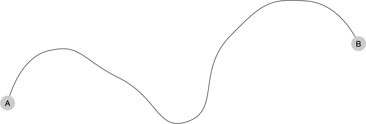

Principe
Le principe de la programmation dynamique est simple :
Principe
Une solution optimale à un problème est constituée de solutions optimales de sous-problèmes.
Il s'applique aux problèmes d'optimisations et en particulier ceux que l'on peut écrire sous une forme récursive. Illustrons le avec la recherche de chemins le plus rapide. Supposons que le chemin le plus rapide entre la ville A et la ville B soit celui ci-dessous :

Prenons une ville sur ce chemin, par exemple la ville C :

Alors :
- Le chemin le plus court entre la ville A et la ville C est le bout de chemin entre A et C sur le chemin le plus court entre A et B
- Le chemin le plus court entre la ville C et la ville B est le bout de chemin entre C et B sur le chemin le plus court entre A et B
En effet, s'il existait par exemple un chemin plus rapide entre A et C (le chemin rouge) :

Il suffirait de passer par lui pour aller de A à C puis reprendre le chemin noir pour aller de C à B pour avoir un chemin encore plus rapide, ce qui est impossible par hypothèse.
Cet exemple est fondamental car c'est de lui qu'est né le principe de programmation dynamique par le mathématicien Richard Bellman. C'est ce que nous allons tout de suite découvrir.
Il existe de nombreux cas d'applications de la programmation dynamique, beaucoup de problèmes pouvant s'écrire sous forme récursive, même s'ils ne sont pas initialement formulé ainsi. Ce n'est cependant une solution universelle car le nombre de sous-problèmes à considérer peut être énorme et donc ne pas donner d'avantage algorithmique clair par rapport à la solution brut force.
Premier exemple : chemin le plus rapide à partir d'une ville
Il existe de nombreux algorithmes permettant de trouver un chemin optimal entre deux données (le plus rapide, le moins cher, ...). Nous allons ici utiliser comme données un réseau ferré et utiliser la méthode utilisée par Bellman lui-même et qui à donné le nom à la méthode générale.
Cet algorithme, appelé "algorithme de Bellman-Ford", est un algorithme très général de théorie des graphes. Nous allons en voir ici une version simplifiée dont le but est de vous faire sentir le principe général de la programmation dynamique et surtout comment l'utiliser comme un principe de résolution de problème.
Données
On va utiliser un réseau ferré comme donnée. Il est constitué d'une liste de tronçons reliant deux gares, chaque tronçon ne contenant aucune gare de passage.
Définition
Un tronçon entre deux gares $x$ et $y$ est une ligne de rails connectant directement les deux gares, sans gares intermédiaire.
Pour un ensemble de gares $G$, on note $T$ la relation (une matrice symétrique) telle que :
- $T[x][y]$ est le temps pour relier les gares $x$ et $y$ s'il existe un tronçon entre elles,
- $T[x][y]$ vaut $+\infty$ s'il n'existe pas de tronçon entre les gares $x$ et $y$,
- $T[x][x]$ vaut 0 pour toute gare $x$
Aller d'une gare à une autre revient à suivre une suite de tronçons. Formalisons ceci :
Définition
Un chemin entre deux gares $x$ et $y$ est soit :
- le tronçon entre $x$ et $y$
- soit une suite $g_1\dots g_{i-1}g_i\dots g_n$ telle que :
- $g_1 = x$, $g_n = y$
- les gares $g_{i-1}$ et $g_{i}$ sont différentes et reliées par un tronçon pour tout $1 < i \leq n$
- pour un chemin $g_1\dots g_{i-1}g_i\dots g_n$ entre $g_1$ et $g_n$ les gares $g_2$ à $g_{n-1}$ sont dites gares de passage
Problème à résoudre
On cherche à connaitre le temps minimal de trajet $M[x]$ entre une gare $A$ (donnée) et chaque autre gare $x$.
Méthode de résolution
Le principe de la programmation dynamique stipule que tout chemin optimal est constitué de sous-chemins eux aussi optimaux pour des sous-problèmes. La principale difficulté lorsque l'on cherche à modéliser un algorithme utilisant la programmation dynamique pour résoudre un problème est de déterminer ce que sont ces sous-problèmes.
Détermination des sous-problèmes
Dans le cas des chemins ferrés, on peut classer les chemins partant de $A$ par rapport à leur nombre de tronçons. De là un chemin optimal de $k$ tronçons entre la gare $A$ et une gare $x$ est constitué :
- d'un chemin optimal de $k-1$ tronçons de la gare $A$ à une gare $y$
- du tronçon entre la gare $y$ et la gare $x$
Si l'on connait les chemins optimaux ayant au plus $k-1$ tronçons entre $A$ et toutes les autres gares $y$ on peut créer un chemin optimal entre $A$ et $x$ d'au plus $k$ tronçons en ajontant le tronçon entre $A$ et $x$.
On a alors l'équation de récurrence suivante :
Avec :
- $G$ l'ensemble des gares
- $T[u][v]$ valant soit le temps de parcourt du tronçon allant de $u$ à $v$, soit $+\infty$ si le tronçon n'existe pas
- $M_k[u]$ le temps minimum d'un chemin entre $A$ et $u$ en au plus $k$ tronçons
Le temps minimum entre les deux gares $A$ et $x$ est donné par $M[x] = M_{|G|}[x]$.
Attention, il est bien nécessaire d'aller jusqu'à $M_{|G|}[x]$, on ne peut pas s'arrêter dès que l'on atteint la gare d'arrivée (ie. dès que le temps devient fini) :
- $T[A][b] = 10$
- $T[A][c] = 1$
- $T[c][b] = 1$
Et on a $M_2[b] = 2 < T[A][b] = 10$.
Stockage des solutions intermédiaires
La partie précédente nous a permis de dégager une équation de récurrence permettant de lier des sous-problèmes entre eux. Pour éviter d'avoir sans cesse à recalculer ces solutions il faut les stocker.
Dans le cas de notre problème l'équation de récurrence montre que pour trouver un chemin optimal à au plus $k$ tronçons entre deux gare il faut connaitre tous les chemins optimaux à au plus $k-1$ tronçons entre la gare de départ et toutes les autres gare. On a pas besoin de tout conserver, juste les valeurs précédentes suffisent.
Algorithme final
On suppose que :
- l'on associe à chaque gare un numéro allant de $0$ à $n-1$ ($|G| = n$), ce qui nous permet de stocker les temps intermédiaires dans un tableau $M$.
- les tronçons sont stockés dans une matrice symétrique valant le temps entre la gare $i$ et $j$ si le tronçon existe et $+\infty$ sinon
from math import inf
def bellman(tronçons, n, gare_départ):
M = [inf] * n
for g in range(n):
M[g] = tronçons[gare_départ][g]
for k in range(n):
M2 = [inf] * n
for g in range(n):
M2[g] = min(M[g], min([M[x] + tronçons[x][g] for x in range(n)])
M = M2
return M
L'algorithme rend le tableau de temps intermédiaires qui contient le temps minimal entre la ville de départ et une gare $x$ quelconque. S'il n'existe pas de chemins entre la gare de départ et une gare $x$, alors $C[x]$ vaut $+\infty$.
- On a utilisé
infqui représente l'infini - l'utilisation de $D$ permet d'éviter les effets de bord
La complexité de cet algorithme est clairement en $\mathcal{O}(n^3)$ avec $n$ le nombre de gares.
Méthode de résolution
Méthode
Pour résoudre un problème d'optimisation en utilisant la programmation dynamique se fait en 3 étapes :
- choix des sous-problèmes
- détermination de l'équation de récurrence liant les sous-problèmes entre eux
- résolution de l'équation en stockant les résultats intermédiaires (très souvent les solutions optimales des sous-problèmes) pour éviter de les recalculer
Le gain algorithmique de l'utilisation de la programmation dynamique résulte dans le fait de stocker les résultats intermédiaires (les sous-problèmes optimaux) pour ne pas avoir à les recalculer. Cette approche est d'autant plus efficace que :
- l'équation de récurrence est simple à calculer,
- le nombre de sous-problèmes à stocker est faible.
Enfin, la programmation dynamique nous assure de trouver un chemin optimal. Ce n'est très souvent pas un problème car on est généralement intéressé par une solution et pas par toutes les solutions possibles, mais il faut en être contient.
Deuxième exemple : existence de route entre deux villes quelconques
En reprenant les données du premier exemple, la liste de tronçons pour un ensemble de gares, on se pose la question de savoir s'il existe un chemin entre deux gares quelconque. On aimerait avoir une relation $C$ nous permettant de savoir si l'on peut voyager de la gare $x$ à la gare $y$ :
Définition
Pour un ensemble de gares $G$, on note $C$ la relation chemin (une matrice symétrique) telle que :
- $C[x][y]$ est vrai s'il existe un chemin entre les gares $x$ et $y$
- $C[x][y]$ est faux s'il n'existe pas de chemin entre les gares $x$ et $y$
- $C[x][x]$ est vrai pour toute gare $x$
Le premier exemple montre que la programmation dynamique permet de trouver le temps de chemin optimal entre une gare et toutes les autres en $\mathcal{O}(n^3)$ opérations. On peut alors résoudre notre problème en effectuant l'algorithme du premier exemple pour chaque gare $x$ et dire que $C[x][y]$ si et seulement si le temps minimum de trajet entre $x$ et $y$ est fini. Ceci nous prendrait en tout $\mathcal{O}(n^4)$ opérations.
Il est possible de faire mieux, encore une fois en utilisant la programmation dynamique.
La notion de chemin s'écrit très bien sous la forme d'une relation $C$ car c'est une relation d'équivalence. Elle est en effet :
- réflexive $C[x][y]$ (le singleton $x$ permet de relier $x$ à lui-même)
- symétrique $C[x][y]$ implique $C[x][y]$ (les routes sont à double sens)
- transitive $C[x][y]$ et $C[x][y]$ implique $C[x][y]$ (on colle la suite allant de $x$ à $y$ à la suite allant de $y$ à $z$)
L'intérêt de cette formalisation est qu'elle montre que la relation des chemins $C$ se crée :
- en considérant la relation $T$ des tronçons ($T[x][y]$ s'il existe un tronçon entre les gares $x$ et $y$)
- en fermant cette relation par transitivité
À première vue créer $C$ à partir de $T$ semble compliqué, mais l'exercice ci-après (qui explicite l'algorithme de Algorithme de Roy) montre qu'on peut le faire très simplement :
Soit $G = \{ g_1, \dots g_n \}$ les gares d'un réseau ferré et $T$ sa relation tronçon.
Montrez que si on note $G_i = \{ g_1, \dots g_i \}$, un chemin entre les gares $x$ et$y$ ayant comme gares de passage uniquement des éléments de $G_{i}$ peut de déduire de chemins ayant uniquement des gares de $G_{i-1}$ comme gares de passage.
corrigé
corrigé
Il existe un chemin entre $x$ et $y$ ayant comme gares de passage uniquement des éléments de $G_{i}$ si :
- soit il existe un chemin entre $x$ et $y$ ayant comme gares de passage uniquement des éléments de $G_{i-1}$
- soit il existe les deux chemins suivants :
- un chemin entre $x$ et $v_i$ ayant comme gares de passage uniquement des éléments de $G_{i-1}$
- un chemin entre $v_i$ et $y$ ayant comme gares de passage uniquement des éléments de $G_{i-1}$
Ici, le sous problème revient à restreindre le nombre de gares possible ! On a plus de relation de récurrence, mais un lien entre les chemins ne passant que par les éléments de $G_{i-1}$ et ceux passant passant par $G_{i}$. On peut ainsi reprendre la méthode de résolution du premier exemple :
Déduire un algorithme utilisant la programmation dynamique en $\mathcal{O}(n^3)$ permettant de trouver la relation chemin à partir de la relation tronçon.
corrigé
corrigé
En notant $C_k[i][j]$ la relation telle que les gares $i$ et $j$ sont reliées par un chemins de gares de passage plus petites ou égale à $k$, $C_k[i][j]$ est vrai si l'une ou l'autre des assertions suivant est vrai :
- $C_{k-1}[i][j]$ est vrai
- $C_{k-1}[i][k]$ et $C_{k-1}[k][j]$ sont vrais
Qui se résume en :
$$
C_k[i][j] = C_{k-1}[i][j] \text{ OU } (C_{k-1}[i][k] \text{ ET } C_{k-1}[k][j])
$$
Ce qui donne l'algorithme :
for i in range(n):
for j in range(n):
C[i][j] = T[i][j]
for k in range(n):
D = [[False for i in range(n)] for j in range(n)]
for i in range(n):
for j in range(n):
D[i][j] = C[i][j] or (C[i][k] and C[k][j])
C = D
return C
Notez que comme il ne peut pas y avoir d'effets de bord (une fois que la valeur est vrai, elle ne bouge plus), on peut se passer de la matrice $D$ et écrire l'algorithme :
for i in range(n):
for j in range(n):
C[i][j] = T[i][j]
for k in range(n):
for i in range(n):
for j in range(n):
C[i][j] = C[i][j] or (C[i][k] and C[k][j])
return C
Vous aurez certainement remarqué qu'on peut le faire, mais explicitez le :
Modifiez l'algorithme précédent pour remplacer la création de la matrice $C$ par la matrice $M[i][j]$ qui donne, comme pour le premier exemple) le temps minimum du chemin entre la gare $i$ et la gare $j$.
corrigé
corrigé
Le temps de trajet minimum entre deux gares $x$ et $y$ ayant comme gares de passage uniquement des éléments de $G_{i}$ est :
- soit le temps de trajet minimum entre $x$ et $y$ ayant comme gares de passage uniquement des éléments de $G_{i-1}$
- soit la somme des temps de trajet minimum entre :
- $x$ et $v_i$ ayant comme gares de passage uniquement des éléments de $G_{i-1}$
- $v_i$ et $y$ ayant comme gares de passage uniquement des éléments de $G_{i-1}$
On peut donc écrire l'algorithme :
from math import inf
for i in range(n):
for j in range(n):
M[i][j] = T[i][j]
for k in range(n):
M2 = [[inf for i in range(n)] for j in range(n)]
for i in range(n):
for j in range(n):
M2[i][j] = min([M[i][j], M[i][k] + M[k][j]])
M = M2
return M
De même que pour l'exercice précédent, il ne peut y avoir d'effet de bord, les temps de chemins ne faisant que diminuer (cela marche même si l'on à des temps de parcourt négatif), on peut se passer de la matrice $M2$ et écrire l'algorithme sous la forme :
from math import inf
for i in range(n):
for j in range(n):
M[i][j] = T[i][j]
for k in range(n):
for i in range(n):
for j in range(n):
M[i][j] = min([M[i][j], M[i][k] + M[k][j]])
return M
L'algorithme de la question précédente est de même complexité que celui du premier exemple et résout un problème plus général ! Il est connut sous le nom d'algorithme de Roy-Floyd-Warshall. Mais se pose alors la question :
Quel est l'intérêt de l'algorithme du premier exemple (algorithme de Bellman-Ford) par rapport au second (algorithme de Roy-Floyd-Warshall) ?
corrigé
corrigé
Les complexités temporelles sont les même mais pas la complexité spatiale. Le second algorithme doit conserver toute une matrice de chemins, alors que le premier ne conserve qu'une ligne, celle concernant la gare de départ.
Stockage des résultats intermédiaires
Il existe deux approches pour le stockage des résultats intermédiaires : l'approche bottom-up et la mémoïsation. Nous allons montrer les deux techniques en nous aidant de la suite de Fibonacci dont l'équation de récurrence est :
$$
F(n) = F(n-1) + F(n-2)
$$
L'algorithme récursif naïf calculant $F(n)$ est :
def F(n):
if n <= 2:
return 1
else:
return F(n - 1) + F(n - 2)
Sa complexité est rédhibitoire (on l'a vu, elle est exponentielle).
Approche bottom-up
La première optimisation possible est l'approche bottom-up, qui consiste à commencer par les conditions aux limites de la récurrence puis de remonter petit à petit l'équation de récurrence jusqu'à arriver au problème initial. C'est la méthode que l'on a utilisé pour les deux premiers exemples.
Pour la suite de Fibonacci cela donne :
def F(n):
a = 1
b = 0
for i in range(n - 1):
a, b = a + b, a
return a
La complexité est maintenant linéaire et ne sont stockés que les éléments nécessaires à la résolution de la prochaine étape de l'équation de récurrence (la complexité spatiale est en $\mathcal{O}(1)$).
Mémoïsation
La mémoïsation est le fait de stocker les résultats d'une fonction pour ne pas avoir à la rappeler plus tard et utiliser directement le résultat. C'est ce qui est mis en oeuvre dans les techniques de cache comme le cache web ou encore la mémoire cache.
C'est très utile si on a une équation de récurrence compliquée ou qu'on ne contrôle pas ce que l'on cherche.
La mémoïsation est un principe fondamental en algorithmie qui permet d'échanger de la complexité en nombre d'instruction par de la complexité spatiale : on échange du temps par de l'espace. Ce n'est pas toujours un échange profitable, savoir s'il faut utiliser la programmation dynamique se fait donc au cas par cas.
Pour le calcul de la suite de Fibonacci, cela donne si $n$ est plus petit que $N$ :
cache = [None] * N
def F(n):
if cache[n] != None:
return cache[n]
if n <= 2:
f = 1
else:
f = F(n - 1) + F(n - 2)
cache[n] = f
return f
Le fait que $F(n - 2)$ ne soit appelé qu'une fois que $F(n - 1)$ le soit, fait que son résultat a été mémoïsé puisqu'il a fallu le calculer lors de l'appel de $F(n - 1)$.
Il n'y a donc que $n$ appels récursifs, le second élément ayant été mémoïsé :
- la complexité est en $\mathcal{O}(n)$
- la complexité spatiale est également en $\mathcal{O}(n)$ (le tableau de mémoïsation)
Troisième exemple : sous-suite croissante maximum
Le problème est le suivant :
Problème
Soit $T$ un tableau à $n$ éléments. On cherche la longueur de la suite ${(s_i)}_{i\geq 0}$ strictement croissante la plus grande possible telle que $T[s_i] < T[s_{i+1}]$ pour tout $i$.
Nous allons résoudre ce problème par programmation dynamique en définissant $N[i]$ comme étant la longueur maximal de la suite pour le tableau $T[i:]$ (on a supprimé les $i$ premiers éléments de $T$. Le tableau $T[0:]$ est le tableau initial et $T[2:]$ est le tableau auquel on a supprimé les deux premiers éléments).
Si $n$ et la taille de $T$, montrez que :
- $N[i] \geq 1$ pour tout $0\leq i < n$
- $N[n-1] = 1$
corrigé
corrigé
Clair.
Les constatations préliminaires précédentes permettent de trouver une relation de récurrence entre les $N[i]$ :
Déterminez une une relation de de récurrence entre $N[i]$ et les $N[j]$ pour les $j>i$ tels que $T[i] < T[j]$.
corrigé
corrigé
La relation de récurrence précédente permet de créer des algorithmes de résolution. Vous allez en créer deux :
Proposez un algorithme récursif et utilisant la mémoïsation pour résoudre le problème.
corrigé
corrigé
Pour une taille de tableau plus petite que $N$, on a :
cache = [None] * N
def sous_suite(T, i):
if cache[i] != None:
return cache[i]
if i >= len(T) -1:
v = 1
else:
v = 1 + max([
0,
max([sous_suite(T, j) for j in range(i + 1, len(T)) if T[j] > T[i]])
])
cache[i] = v
return v
print(sous_suite(T, 0))
Tout comme pour la mémoïsation de la suite de Fibonacci, on ne calcule sous_suite(T, i) qu'une seule fois.
Chaque calcul peut demander le calcul de tous les sous_suite(T, j), pour tous les $j>i$, donc une complexité de $\mathcal{O}(n)$ lorsque tous les résultats seront dans le cache. La complexité totale de sous_suite(T, 0) est donc de $\mathcal{O}(n^2)$.
Proposez un algorithme itératif et bottom-up pour résoudre le problème.
corrigé
corrigé
Il faut partir de ce que l'on connait, $N[n-1]$, puis redescendre itérativement vers $N[0]$.
def sous_suite(T):
N = [1] * len(T)
for i in range(len(T) - 2, -1, -1):
N[i] = 1 + max([
0,
max([N[j] for j in range(i + 1, len(T)) if T[j] > T[i]])
])
return N[0]
print(sous_suite(T))
La complexité est clairement en $\mathcal{O}(n^2)$.